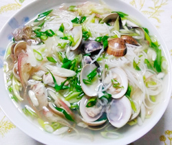

ハマグリと青ネギのにゅう麺
- 調理時間：20 分
- （一人当たり）
- カロリー：217kcal
- たんぱく質：8.3g
- 脂質：0.9g
- 炭水化物：41.7g
- 塩分：1.9g


＜2人分＞
- ハマグリ
- 100g
- 青ネギ
- 30g
- ミョウガ
- 1個
- ショウガ
- 適宜
- そうめん
- 100g
- 薄口しょうゆ
- 小さじ1/2
- みりん
- 小さじ2
- 塩
- 少々


- ハマグリは塩抜きし、殻をこすり合わせるように洗う。
- 青ネギは斜め切りにする。ミョウガは縦半分に切り、細切りにする。
ショウガは千切りにして針ショウガにする。 - そうめんはたっぷりの湯で指定通りの時間でゆでておく。
- 鍋に水を600～700ｍｌ入れて沸騰させる。
ハマグリを入れて貝が開くまで加熱する。
貝が開いたら、薄口しょうゆ、みりん、塩で味をととのえる。 - 茹でたそうめん、青ネギ、ミョウガ、ショウガを加えて温める。
全体に火が通れば完成。
ハマグリと青ネギのにゅう麺
季節の変わり目は最高気温と最低気温が前日と比べ、大きく変化することがあります。気温差が激しい環境下では自身で思っている以上に体に負担がかかり、疲労感や怠いといったプチ不調に悩まれている方もいるでしょう。そんなときこそ、食事・入浴・睡眠の３つの習慣を見直すことをおすすめします。怠いときも食事の量が少なすぎると必要な栄養素が摂れず、代謝機能が下がり、体を温めるエネルギーが生み出せません。汁物はスープごといただけば食材から流れ出た栄養素も摂れますし、体を温めます。ショウガをほんの少し添えれば体を温める効果が高くなります。